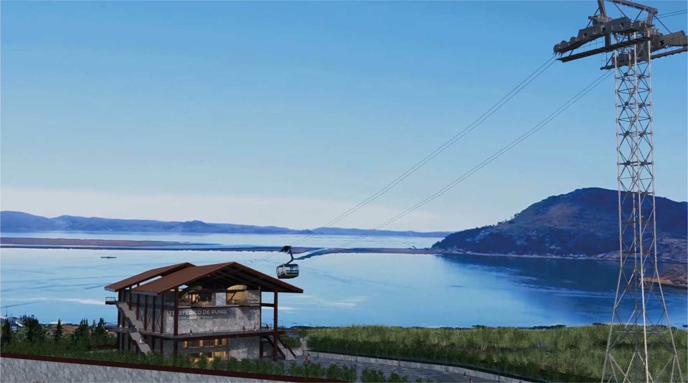
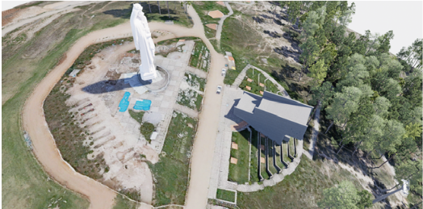

Puno · Puno · Puno
Cerro Azoguini — Lago Titicaca
Mejoramiento de los servicios turísticos públicos en recursos turísticos en el Mirador Natural Cerro Azoguini, distrito de Puno, provincia de Puno, departamento de Puno.
Ingeniería y perfiles
Diseñamos y construimos sistemas RÍO CABLE. Elaboramos perfiles de inversión pública para mejorar servicios turísticos en recursos de alta montaña.

Puno · Puno · Puno
Mejoramiento de los servicios turísticos públicos en recursos turísticos en el Mirador Natural Cerro Azoguini, distrito de Puno, provincia de Puno, departamento de Puno.
El Cerro Azoguini es mirador natural y lugar de peregrinación. Desde la cima se abre el lago navegable más alto del mundo. El perfil apunta a mejorar la accesibilidad y los servicios turísticos públicos del recurso.
Un sistema de transporte por cable convierte un ascenso de más de media hora en una experiencia segura y continua.
Alcance del perfil

Junín · Concepción · Concepción
Mejoramiento de los servicios turísticos públicos en recursos turísticos en el Mirador Virgen de la Inmaculada Concepción de Piedra Parada, distrito de Concepción, provincia de Concepción, departamento de Junín.
La estatua de la Virgen de la Inmaculada Concepción en Piedra Parada es una de las más grandes del Perú: cerca de 30 m entre pedestal, figura y corona. Mirador sobre el Valle del Mantaro, Huaytapallana, Jauja, Chupaca y Huancayo.
El perfil de TARNEX se orienta al mejoramiento de acceso, interpretación, seguridad y experiencia de visita.
Alcance del perfil
Diseño y construcción
Hemos diseñado y construido teleféricos rurales para el cruce de ríos. Cabina roja, pórticos de acero, dos portadores y tractor.
Huaro tradicional
Solución TARNEX